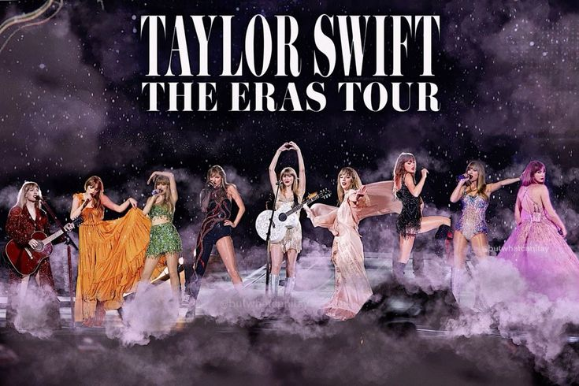
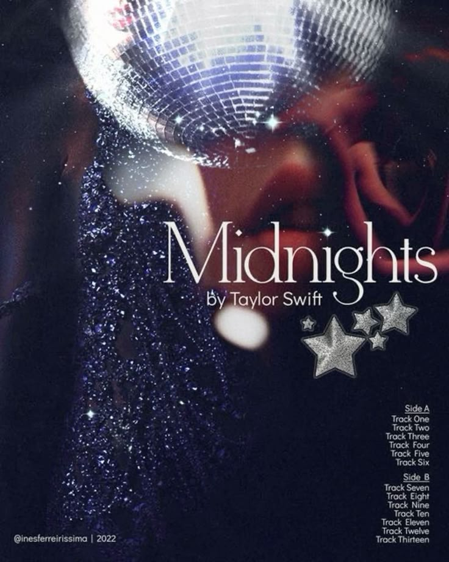
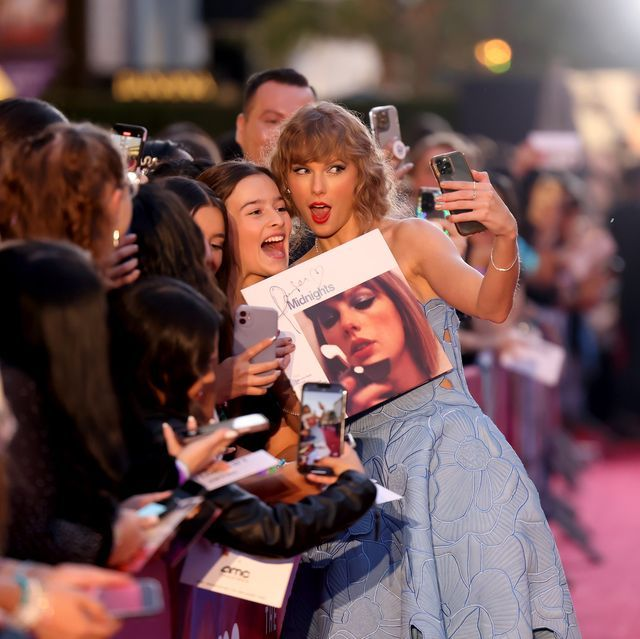
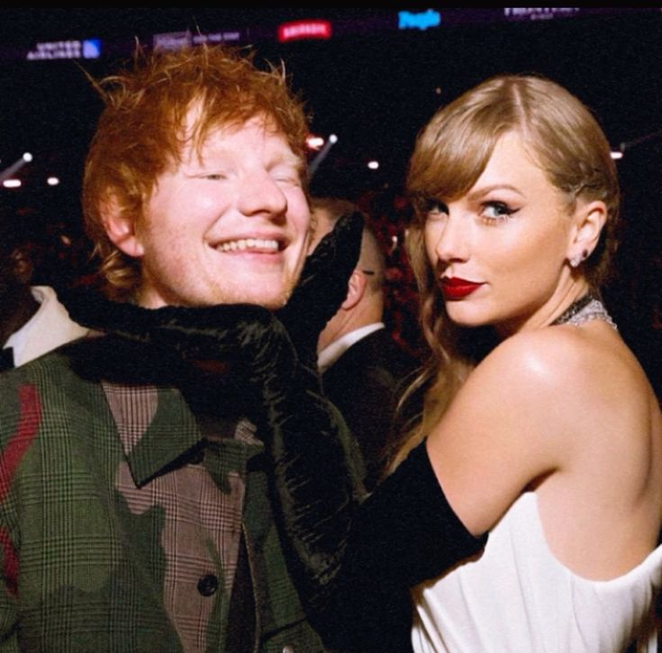
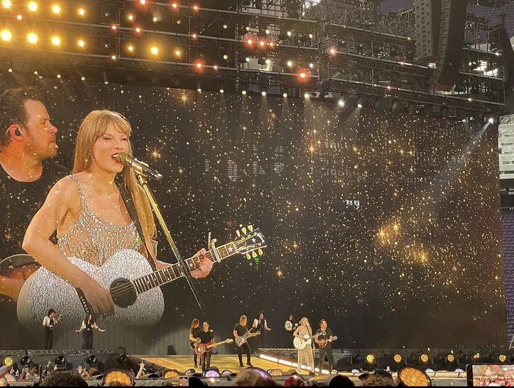
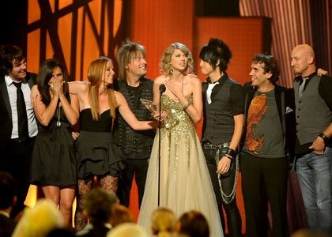
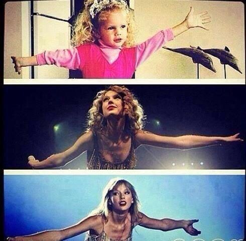

Latest Blog Posts
Taylor Swift has become a defining voice in music, transforming from a country singer to a global pop icon. With each album, she weaves personal stories into relatable songs, resonating with fans worldwide. Join us as we explore her music, tours, and special moments that make Taylor a true superstar.

Behind the Scenes of The Eras Tour: Taylor's Creative Process
Posted: October 10, 2024
Get an inside look at how Taylor Swift designed each era of her latest tour. From brainstorming stage designs to curating the perfect setlist, explore how she brings her vision to life for millions of fans around the world.
Read More

The Midnights Era: A Deep Dive into Taylor’s Latest Album
Posted: September 25, 2024
Explore the themes and inspiration behind Midnights, Taylor Swift’s introspective album. Find out what makes this era so unique and why it resonates with listeners on a deeper level. Get an inside look at how Taylor Swift designed each era of her latest tour.
Read More

Taylor’s Favorite Fan Moments from The Eras Tour
Posted: September 15, 2024
During every show, Taylor has connected with fans in special ways, from surprise song dedications to personal interactions. Read some of her favorite moments and hear what fans have to say! Taylor Swift designed each era of her latest tour.
Read More

Collaborating with Ed Sheeran: A Friendship Through Music
Posted: August 30, 2024
Take a look at the creative chemistry between Taylor Swift and Ed Sheeran, from their first collaboration on "Everything Has Changed" to more recent hits. Learn how their friendship has influenced their music. Taylor Swift designed each era of her latest tour.
Read More
The Art of Songwriting: Taylor's Creative Process
Posted: August 20, 2024
Delve into Taylor Swift's songwriting process, exploring how she crafts lyrics that resonate with fans. Discover the inspiration behind some of her most beloved songs and the stories that shape her music.
Read More

Special Tour Dedications: Moments that Matter
Posted: August 5, 2024
Explore the heartfelt dedications Taylor makes during her concerts, showcasing her connection with fans and the stories behind these special moments. Each dedication is a testament to her genuine love for her audience.
Read More

Taylor's Award Show Moments: Celebrating Achievements
Posted: July 30, 2024
Take a look back at Taylor Swift's unforgettable moments at award shows, from historic wins to emotional speeches. Celebrate her achievements and the impact she’s made on the music industry. Taylor Swift designed each era of her latest tour.
Read More

Taylor Swift's Philanthropy: Giving Back to the Community
Posted: October 15, 2024
Taylor Swift is not just a musical icon but also a role model for generosity. Discover her various charitable endeavors, from education initiatives to disaster relief, and how she inspires her fans to make a difference.
Read More
Comments
AliceW21: I loved the way you incorporated all the eras into the show! Absolutely amazing!
SwiftieFan99: The setlist was perfect! Can't wait to see more behind-the-scenes content!
MusicLover88: Taylor always knows how to connect with her fans. This tour is unforgettable!